Building meaningful systems with curiosity and range
I am a biomedical engineering engineering student with interests in medical devices, prototyping, and artificial intelligence. I’ve always had an interest in the medical field but decided the traditional route of medicine wasn’t for me, and I strive to help others through the development of improved lab and medical equipment. During the school year and summers, I enjoy working as a lab assistant at the Engineering Product Innovation Center (EPIC) on BU campus. I’ve been able to receive training on all the equipment and now help out other students and work on projects in the shop. I also have worked as a Learning Assistant for the Mechanical Engineering department, which has instilled both a greater understanding of mechanics and a love for teaching. I love working on personal projects within STEM during my free time, and I hope you will enjoy checking out some of my favorite projects from classes, work, and my own imagination.
Strengths
How I approach engineering work
C
Curiosity
I am eager to learn and always exploring how different fields can interact together
A
Adaptability
Challenging problems and situations empower me to learn quickly and pivot if necessary
R
Reliability
As an engineer, I know the importance of working with and supporting a team
E
Execution
A solutions-oriented mindset is necessary for me to innovate and create the best product I can
Connect
Let’s talk about medtech, design, and interdisciplinary engineering
Please take the time to learn more about my background, motivation, and aspirations through a timeline of projects and jobs that shaped who I am as an engineer.
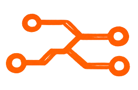
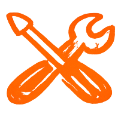
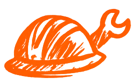
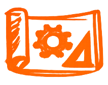
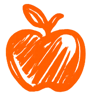
Early intersection of AI and Healthcare
When I was in highschool, I took a summer course in machine learning at Boston University, where I now study engineering. The course, AI4ALL, was the first time I was introduced to AI, and I was able to work with a group of other highschoolers on a binary classification model. With help from our instructors, we created a model that differentiated between chest X-rays with and without COVID-19. Biotechnology was my favorite subject in high school, and I loved how AI could be integrated into healthcare and diagnostic tools.
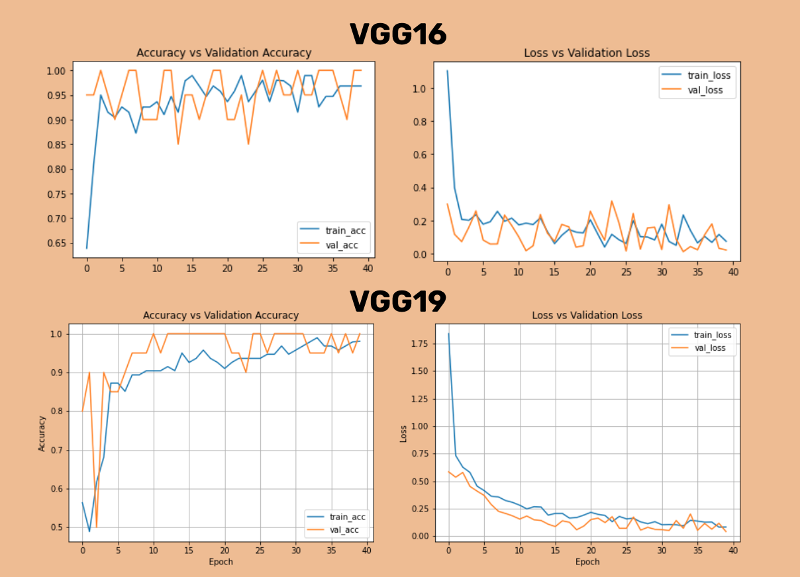
AI4ALL introduced me to medical imaging, data, and model performance.
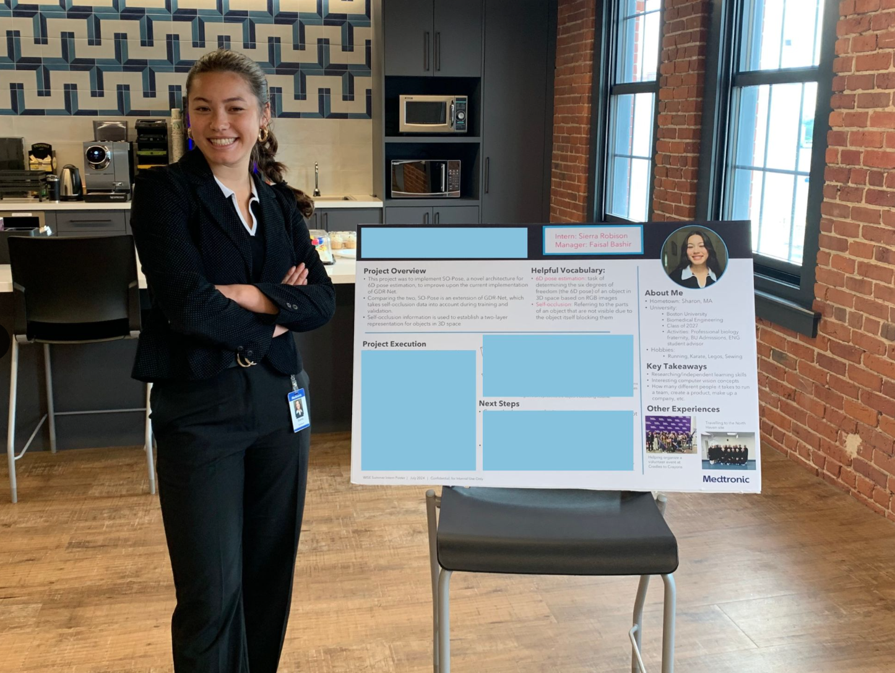
At Medtronic, AI connected to surgical robotics and real medical technology.
Computer vision and intro to medical devices
During the summer after my freshman year of university, I was a WISE intern in the Surgical Robotics department of Medtronic. I worked on the Research & Technology team, collaborating on a computer vision project. Honestly, I felt out of my depth at first figuring out Linux, Bitbucket, Jira, and how to independently work on my project, but overtime, I learned the skills I needed to succeed. Medtronic’s Hugo RAS system amazed me, and triggered my interest in pursuing medical devices.
My own medical device
Going into sophomore year, I was excited to take a hands-on engineering class where we would work in a team of engineers in different disciplines to create a product. Lucky for me, I got my first choice of project, which was a wearable device to track the heel and toe strikes of a stroke recovery patient. Building the device quickly took up my free time as my team and I designed, soldered, troubleshooted, and refined. Our product, BlueGait, had arm and foot components, which communicated through bluetooth. We were voted third place among all of the gait tracking devices, though I will brag that we had the only successful use of Bluetooth. Despite its somewhat rudimentary appearance, I’m still proud of the work we did, remembering why we made the decisions we did on every single part of the device.
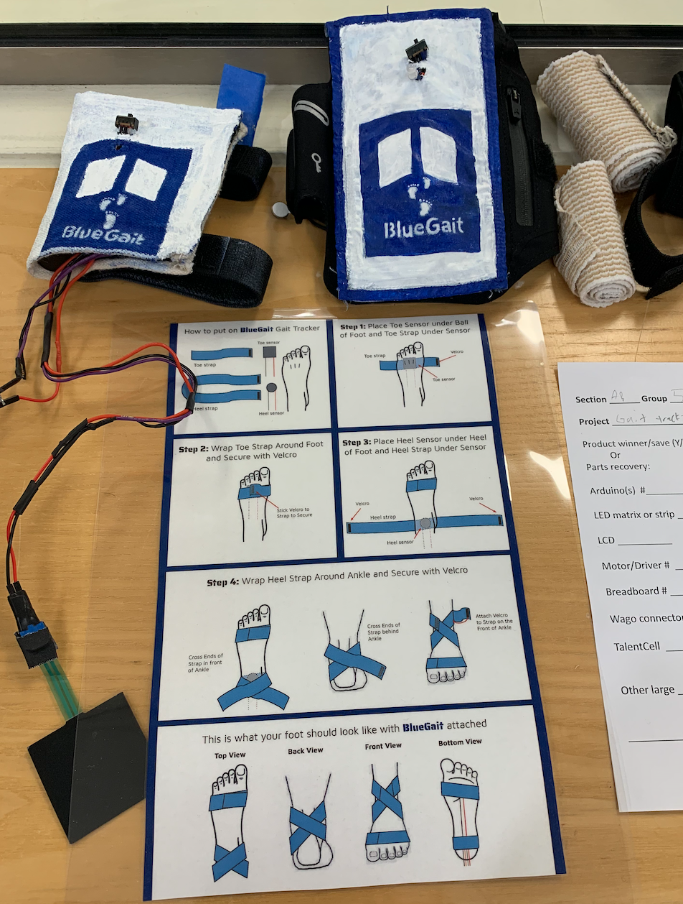
BlueGait combined sensing, feedback, and rehabilitation-focused design.
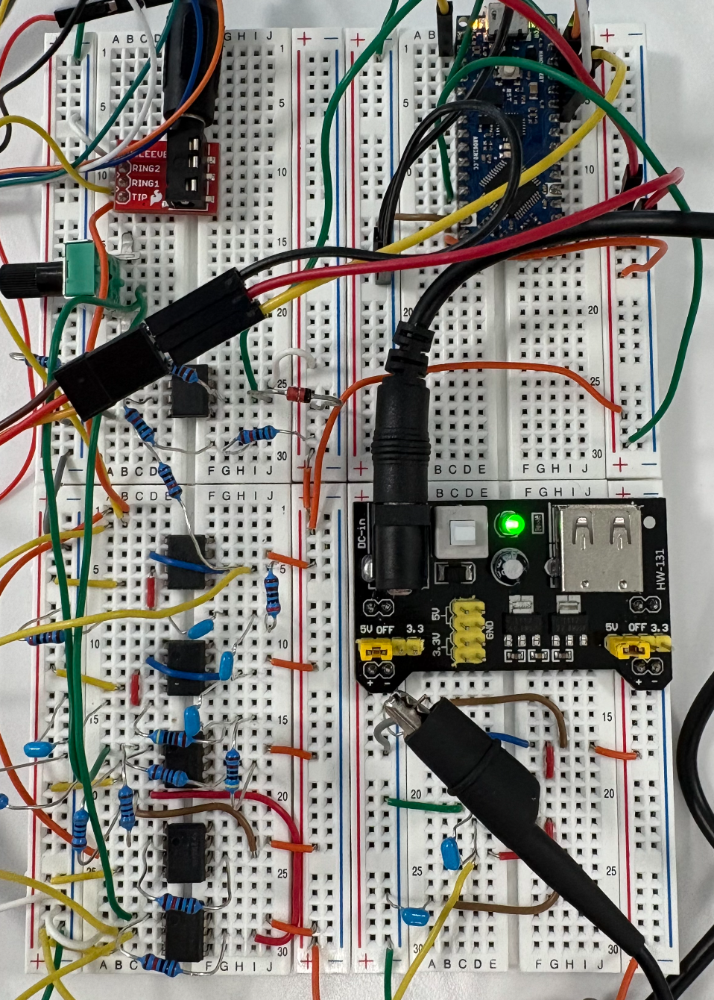
The EMG system connected biological signals to electronic processing and motion.
Further into medical electronics
During my junior year, while studying abroad in Sydney, I took a Biomedical Instrumentation course. Our final project was the creation of an EMG system. I tackled the circuit design while my team worked on the program. I learned how muscle signals can be amplified, filtered, interpreted, and analyzed, and spent more hours than I’d like to admit adjusting resistor values. Even though my teammate blew up our Arduino on presentation day, I am just happy to have learned so much about the inner workings of medical devices.
Having an EPIC job
Since sophomore year, I started working at the Engineering Product Innovation Center at BU. I had used EPIC for the gait tracker project and was eager to learn how to use all of the machines. Unfortunately, there’s not much machining in the biomedical engineering major (a real shame), so I applied to work there. During the school year, I learned what I could, helped people in the shop, and cleaned a lot of machines. I decided to continue working there during the summer after sophomore year in order to have the time to perform all of the introductory projects for the machines. It was even more fun than I expected, and in the summer, we had time to work on projects to improve the lab too. For example, I got to use the 3D scanner to demonstrate how to rapidly and cheaply prototype a product. My semester in Sydney started in July, so I tried to absorb as much as I could during that summer. It solidified my interest in mechanical engineering, CAD, and machining.
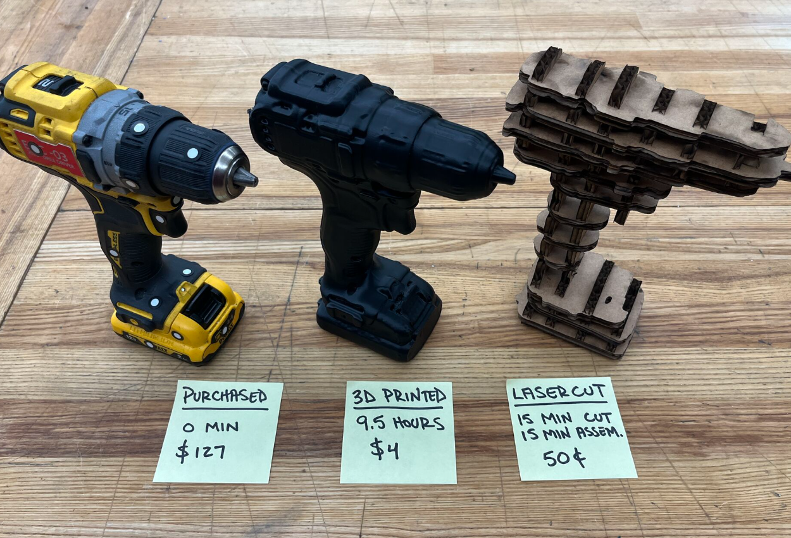
EPIC gave me practical experience with scanning, fabrication, machining, and prototyping.
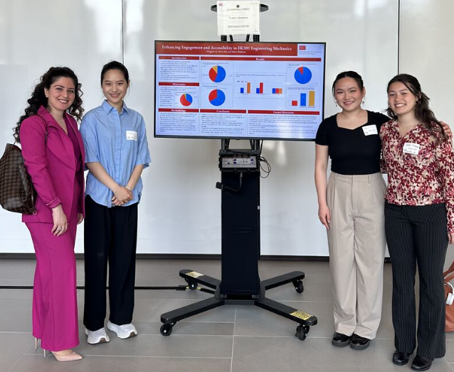
Teaching mechanics helped me care about how people learn engineering.
Learning became teaching
During the same semester I started working at EPIC, I became a learning assistant for Static Mechanics. I fell in love with the Static Mechanics class when I took it the previous semester. The content was so much fun for me– problem solving, math, and physics, what was there not to love? I also liked the format of the class, so I applied to be an LA. Teaching was more rewarding than I expected. I learned to think about how different people approach problems, often realizing I needed to delve further into the content to answer my students’ questions. I hope to teach in some capacity in the future as well as to adopt the inquisitive nature of my students.